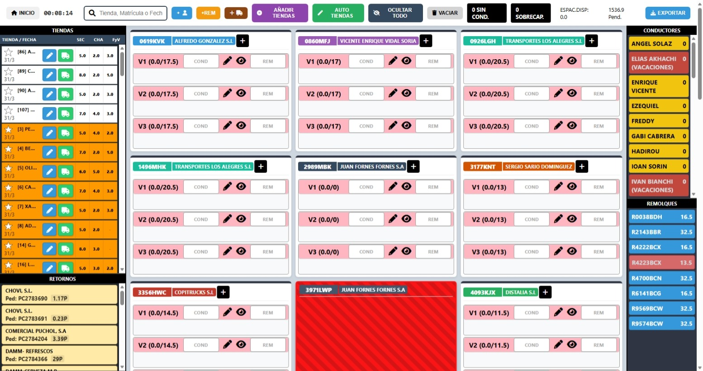
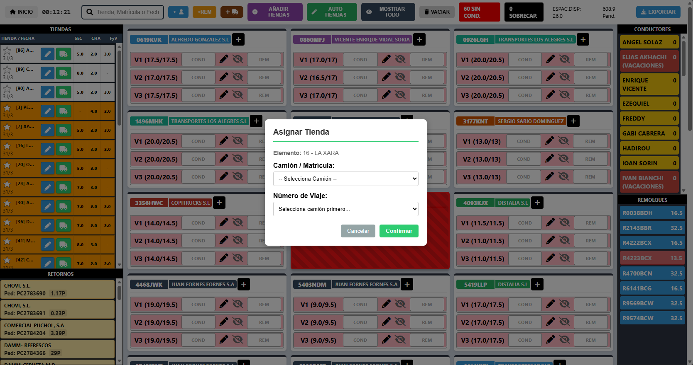
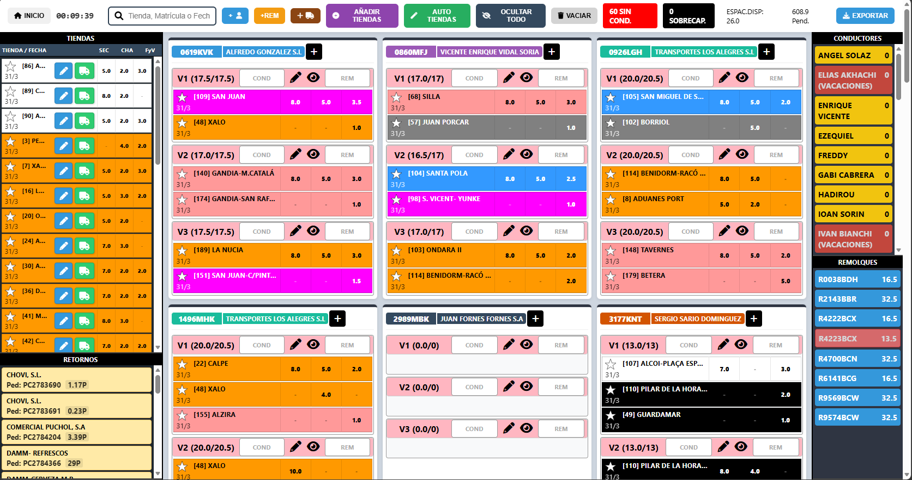
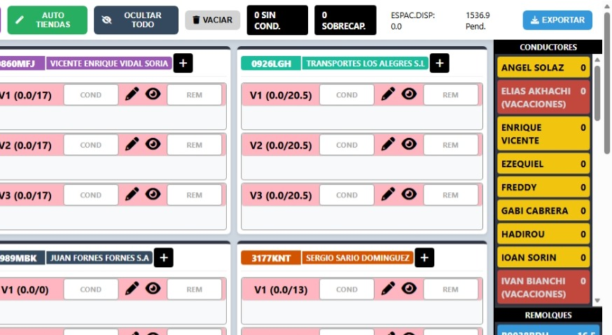
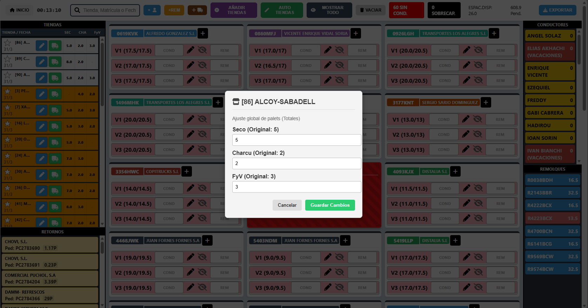
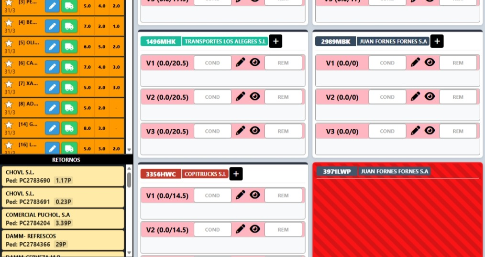

Enrutador
Plataforma logística para la planificación y asignación de rutas de transporte, diseñada para organizar tiendas, vehículos, conductores y retornos desde una única interfaz visual.
Funcionalidades Clave
Carga inicial de planificación
La aplicación comienza con una pantalla de preparación donde cada usuario puede cargar sus propios archivos Excel antes de iniciar la planificación de rutas.
- Carga manual de necesidades, flota y restricciones
- Funcionamiento sin persistencia de datos entre sesiones
- Cada usuario puede trabajar con sus propios ficheros
- Acceso directo al planificador tras validar la información

Vista global de rutas y recursos
Panel centralizado que permite visualizar todas las tiendas, viajes y recursos logísticos disponibles en tiempo real dentro de una única pantalla operativa.
- Listado lateral de tiendas pendientes de asignación
- Visualización de camiones y capacidad disponible por viaje
- Panel independiente de conductores y remolques
- Distribución visual organizada por vehículos y viajes

Gestión de conductores, camiones, tiendas y remolques
La aplicación permite administrar todos los recursos logísticos necesarios para la planificación diaria desde la misma interfaz de trabajo.
- Asignación de conductores a vehículos y viajes
- Gestión de remolques disponibles y ocupados
- Visualización rápida de recursos sin asignar
- Capacidad configurable para cada vehículo y remolque

Asignación automática de tiendas
El sistema incluye funciones de auto planificación que permiten distribuir tiendas automáticamente sobre los viajes disponibles según las restricciones cargadas.
- Botón de auto tiendas para planificación automática
- Reasignación rápida de rutas y cargas
- Visualización inmediata de resultados
- Compatibilidad con restricciones y capacidades configuradas

Exportación y cierre de planificación
Una vez completada la asignación de rutas y recursos, la planificación puede exportarse para su distribución y uso operativo.
- Exportación de la planificación final
- Preparación rápida para operaciones diarias
- Generación de rutas organizadas por vehículo
- Interfaz optimizada para uso intensivo y planificación rápida

Edición dinámica de datos operativos
El sistema permite modificar información operativa durante la planificación para adaptar rápidamente las rutas a cambios diarios.
- Edición de datos de tiendas directamente desde el panel
- Añadir nuevas tiendas mediante carga de Excel
- Actualización manual de vehículos y conductores
- Replanificación inmediata sin reiniciar la sesión

Control de retornos y recogidas
La plataforma incorpora una sección específica para gestionar retornos asociados a clientes y pedidos dentro de la planificación logística.
- Listado de retornos pendientes
- Asignación de retornos a rutas existentes
- Visualización de pedidos asociados
- Control del espacio ocupado por retornos
Seguimiento de ocupación y disponibilidad
El planificador muestra constantemente la capacidad disponible y la ocupación de cada viaje para facilitar la toma de decisiones durante la planificación.
- Visualización de espacio disponible por camión
- Indicadores de sobrecapacidad y restricciones
- Control de ocupación en tiempo real
- Resumen global de capacidad pendiente
- Panel visual con estados y alertas